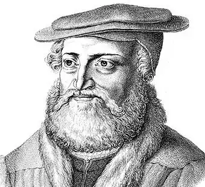
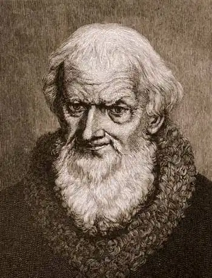

САКС, Ганс (Sachs, Hans — 05.11.1494, Нюрнберг — 19.01.1576, там само) — німецький поет.Сакс — майстерзинґер, автор фастнахтшпілів, один із найвідоміших представників міської (бюргерської) літератури XVI ст. Син кравця. З 1509 р. він навчався у Нюрнберзькій латинській школі, аз 1514 р. почав писати вірші, майстерзанги. Вирішивши стати майстром шевської справи, Сакс у 1511 р. подався у мандри, побував у багатьох містах Німеччини, вдосконалюючи свою фахову майстерність. Зокрема, він відвідав Регенсбурґ, Бассау, Зальцбург, Мюнхен, Вюрцбурґ, Франкфурт-на-Майні, Кельн, Аахен та інші міста, наймаючись підмайстром до вправних чоботарів. На дозвіллі ж Сакс опановував мистецтво майстерзангу. У 1516 р. він повернувся у рідний Нюрнберг неабияким знавцем свого ремесла і в 1519 р. став майстром шевського цеху. У 1517 p. Сакс вступив до школи майстерзангу. Його вчителем став Лієнґард Нуннебек. Під його керівництвом Сакс досконало вивчив правила гармонії і віршування, усталені у цьому жанрі музично-поетичного мистецтва, і навіть розвинув їх, збагативши майстерзанґ новими темами і метрами. У 1519 p. Сакс одружився. Його шлюб був вельми щасливим, а родинне життя стало постійним джерелом поетичного натхнення.
Тогочасна Німеччина стояла на порозі серйозних історичних подій. Як і всі німці, Сакс гостро переймався проблемами реформації церкви — либонь, саме тому з 1518 до 1523 р., у період розбрату і боротьби за реформи, пісень не писав. Лише у 1523 р. з'явився алегоричний вірш "Віттенберзький соловей" ("Die Wittenbergisch Nachtigall") з присвятою М. Лютерові (Сакс був його завзятим прибічником). У цій поезії автор всіляко ганьбить римський клір і прославляє виступ М. Лютера, дзвінкий голос якого так само прекрасний, як і голос соловейка, що віщує весну, нові часи для Німеччини.
На захист реформи церкви Сакс написав чотири прозові діалоги, серед них особливо відомою є "Суперечка між каноніком і чоботарем " (1524). У цьому творі автор викриває невігластво католицьких священиків, згодом це призвело до погіршення стосунків Сакса з міськими можновладцями. Коли ж Сакс написав вірші до циклу антипапських гравюр ("Чудесне пророцтво про папство", 1527), магістрат Нюрнберга рекомендував поетові надалі займатися лише чоботарюванням. Але, на щастя, Сакс відхилив цей припис. У творчості Сакса аж до 1548 р. домінували біблійна тематика, критика кліру і сучасної моралі. (Майстерзанг, що склався як мистецька традиція ще у XIV ст., постійно розвивав лише біблійну тему. Розширення тематичної палітри відбулося вже за часів Сакса). З віршів цього періоду найвідомішими є алегорія "Корисливість — жахливий звір" (1527), "Похвальне слово місту Нюрнбергові" (1530), "Розмова про чвари у Священній Римській імперії" (1544) і славнозвісний "Край дармоїдів" ("Das Schlaraffenland", 1530). "Похвальне слово місту Нюрнбергові" — типовий описовий вірш у модному на той час жанрі похвал містам. "Похвалу Нюрнбергові" створили кілька поетів, серед них гуманіст К. Цельтіс, котрий оспівав чимало німецьких міст. Жанр вимагав детального переліку пам'яток і видатних людей міста минулого і сьогодення. Ілюстраціями до таких творів були гравюри. "Край дармоїдів" ("Шларафенланд") — дидактична сатира за мотивами народної казки про країну, де течуть молочні ріки, літають смажені качки, гуси та голуби, які падають ледарям просто до рота, де добре живеться дурням, а розумників проганяють геть, де королем обирають найбільшого неробу: Та берегтися треба тим,Хто розумом живе своїм.Там бій іде проти ума.Розумним — просвітку нема.На працю волею законуНакладено там заборону.А за порядність і знання Засуджують до вигнання.(Пер. Ф. Скляра)Сатира рясніє дотепними висловами і карикатурними замальовками. Поет вірить у те, що показана ним картина викликатиме огиду до ганебних звичаїв, і радить німцям працювати так, щоби ледарів і дурнів у країні не було. Видатний тогочасний художник П. Брейґель відтворив "Край дармоїдів" на полотні. У "Розмові про чвари у Священній Римській імперії" Сакс порушив тему загибелі Німеччини через станову ворожнечу у суспільстві, через нехтування інтересами вітчизни. Поет вважав, що порятунок лише у єдності і злагоді, що князі та можновладці повинні пам'ятати про свій обов'язок перед батьківщиною й оберігати її, а не розривати на шматки. У період з 1548 по 1556 p. Сакс особливо захоплювався драматургією, створював дидактичні трагедії на біблійну або античну тематику ("Про зруйнування могутнього міста Трої", 1545).Сакс вперше у німецькій літературі вжив терміни "трагедія" й "акт", але йому, одначе, не судилося створити жодної славетної трагедії — надто потужним був у них дидактичний нурт. Зате сучасникам Сакса дуже подобалися його фастнахтшпілі (святкові комедії, які ставилися вечорами під час м'ясниць) на теми з міського або селянського життя: "Школяр у раю" (1550), "Селянин і викрадач корови" (1550), "Фюнзінгенський конокрад "(1553). Чимало фастнахтшпілів присвячені висміюванню розбещеності церковників, зрадливих жінок, дурних селян, середньовічних схоластів ("Вирізування дурнів", 1536; "Стара звідниця і піп", 1551). Сміховий світ фастнахтшпілів наповнений відомими фольклорними образами та художніми мотивами: буфонна простакуватість, неабияка кмітливість, винахідливість, хитрість; між персонажами комедії часто трапляються бійки та сварки, присмачені лайкою та кпинами. Дидактичність, звертання до глядача з повчальними напучуваннями, розповідь про події замість показу дії пов'язують фастнахтшпіль з традиціями середньовічного міського театру. Сюжет нерідко запозичувався із шванків та анекдотів. Хоча загалом сюжети творів Сакса свідчать про його ґрунтовну освіченість. Джерелами для письменника слугували Біблія, народні книги, рицарські романи, антична література, описи подорожей, хроніки, поезія та проза гуманістів, "Декамерон" Дж. Боккаччо. У 1554 p. Сакс заснував Нюрнберзьку школу майстерзингерів і очолив цех майстерзанґу. Він написав понад 4000 майстерзангів у 275 строфічних формах, причому 13 із них Сакс винайшов сам. Він створив 73 пісні на духовні та світські сюжети, виразно забарвлені бюргерським дидактизмом; 85 фастнахтшпілів, 61 трагедію, 64 комедії, 1700 віршів у різних жанрах бюргерської літератури. Загалом його спадщина складається з 6048 творів. На батьківщині письменника з 1558 до 1579 р. твори Сакса були видані 5-томним зібранням. У XVII—XVIII ст. його вже не перевидавали, і лише наприкінці XVHI ст. ім'я поета-майстерзингера повернулося із забуття. X. М. Віланд написав статтю "Ганс Сакс" (1776). А Й.В. Ґете у "Поезії та правді" назвав творчий метод Сакса дидактичним реалізмом і визнав, що цей поет найближче з-поміж усіх середньовічних ліриків відповідає духові нового часу. У вірші "Тлумачення старого деревориту, який відображає поетичне покликання Ганса Сакса" Ґете, своєрідно наслідуючи середньовічну традицію, змальовує мудрого, спокійного і дещо лукавого бюргера у мить поетичної творчості: Тобі ж бо, — мовила до нього, —Призначено судити строго,Висміювати на всі бокиЛюдське безглуздя і пороки,Бо з волі Божої ти вправіВіддатись цій почесній справі.Смиренність, цноту, зло прокляте Їх іменами маєш звати,А лжею і для сміху, знай,Своїх творінь не прикривай,На світ навколишній дивись,Як Альбрехт Дюрер вмів колись,Бо сили, стійкості немалоЙому саме життя давало. (Пер. П. Тимочка)Німецький композитор Ґ.А. Горцінґ створив оперу "Ганс Сакс" (1840), сюжетним підґрунтям якої стала однойменна драма поета Дернхардштейна з прологом Ґете. У життєрадісній опері Р. Вагнера "Нюрнберзькі майстерзинґери" (1867) Сакс — геніальний поет, музикант і прекрасна людина, закохана у життя. Майстерзанґ же у вагнерівській інтерпретації — це поезія високих почуттів і краси. Українського читача з поезією Сакса познайомили Ф. Скляр та П. Тимочко. А. Зав'ялова